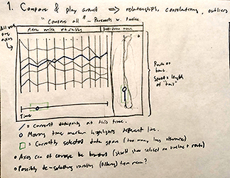
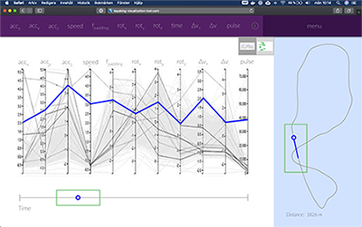

Back
KayakingViz
This is my master's thesis project. More information to come as work progresses!
Background
The work in this project was done in collaboration with the Swedish Olympic Academy (SOA) and the Swedish Olympic Committe (SOC). They had an active research project about tracking data for kayaking athletes, but wanted a way of visualizing it, to enhance the training process, and ultimately achieving higher athletic success.
Development Process
I've had to do just about everything myself in this project, from testing to design and implementation. It's been a challenge, but also a good learning experience for me personally.
Initial work & background
This phase focused mostly on literature study, but I also held a focus group with representatives from the SOA & SOC. It helped build the foundation for the remainder of the work in the project.
UX-design
 A sample paper sketch and it's corresponding digital version
I developed a number of design hypotheses from the information I gathered in the previous phase. I began by simply sketching on paper, and then went on to refine theses ideas using the design software Sketch. This resulted in a low-fi prototype that I could bring back to the SOA & SOC for evaluation, providing feedback for the implementation stage of the project.
Implementation
This is the stage I am currently in! I am using React.js with Redux to realize my ideas, and I am using Firebase for user management, data management and hosting. Will update this with page as work goes on!